一个 Token 的旅程：从 HTTP 请求到数据中心与 GPU
课程：2026 春季学期《操作系统原理》
讲师：蒋炎岩（jyy）
官方课程主页：https://jyywiki.cn/OS/2026/
官方讲义：https://jyywiki.cn/OS/2026/lect21.md
视频来源：Bilibili BV1zS5R6tEWZ
版权说明：课程讲义与幻灯片归蒋炎岩所有，采用 Creative Commons BY-NC 4.0 许可；本电子书是对课堂讲授的书面化重构，保留出处与许可说明。
导语：把整个计算机系统栈串起来
(参考时间: 00:00)
并发部分走到最后一课，课程不再单独讨论某一个同步原语，而是追问：
当用户在浏览器或命令行里向大模型发送一句话，并最终收到一个 Token，中间究竟发生了什么？
这条旅程会经过：
- HTTP 请求与进程系统调用；
- DNS、路由、负载均衡和 API 网关；
- 数据中心中的 CRUD、缓存、计费和审计；
- CAP 定理、分布式文件系统、数据库和 MapReduce；
- Serverless 与幂等函数；
- GPU 上的矩阵乘法、Attention、KV Cache 和推理集群。
flowchart LR
A["用户请求"] --> B["DNS"]
B --> C["网络转发"]
C --> D["Load Balancer"]
D --> E["API Gateway"]
E --> F["业务服务"]
F --> G["数据库 / 缓存"]
F --> H["LLM Inference"]
H --> I["GPU 集群"]
I --> J["Next Token"]
J --> K["Event Stream Response"]
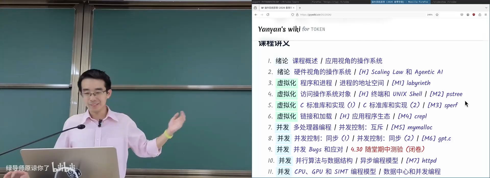
📷 从用户请求到数据中心的完整 Token 旅程
回到原视频 (00:00:30)
1. 并发知识如何进入真实系统
1.1 从 spawn/join 到异构任务与同构任务
(参考时间: 00:01)
前面学过的并发机制可以分成几类：
通用计算图
spawn/join；- 共享内存；
- mutex、条件变量、信号量。
复杂异构任务
- Coroutine、goroutine；
- non-blocking I/O；
- Promise、
async/await。
大量同构小任务
- SIMD 数据并行；
- GPU Shader、CUDA、SIMT。
flowchart TD
A["并发任务"] --> B["异构复杂任务"]
A --> C["同构短任务"]
B --> D["Coroutine / Goroutine"]
B --> E["Promise / async / await"]
C --> F["SIMD"]
C --> G["CUDA / SIMT"]
1.2 数据中心的性能与能效目标
现代 CPU 通过动态调度提高单线程性能，但调度本身消耗面积和能量。SIMD 与 SIMT 则通过共享译码、扩大向量寄存器等方式提高能效。
到了数据中心规模，优化目标不再只是单机性能，而是：
- 每瓦性能；
- 低延迟与高吞吐；
- 弹性扩展；
- 容错与数据正确性。
flowchart LR
A["复杂 CPU 动态调度"] --> B["单线程性能"]
B --> C["功耗与面积代价"]
C --> D["SIMD / SIMT"]
D --> E["更高能效比"]
E --> F["数据中心 GPU 算力"]
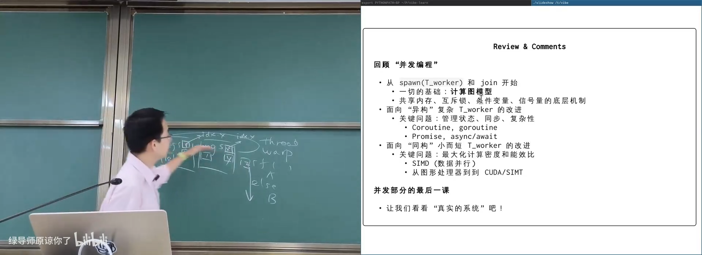
📷 从 CPU 并发模型过渡到数据中心和 SIMT
回到原视频 (00:05:30)
2. 用户的视角：一次 LLM API 请求
2.1 官方 API 只是一个 HTTP 请求
(参考时间: 00:06)
DeepSeek API 的典型调用形式：
curl https://api.deepseek.com/chat/completions \
-H "Content-Type: application/json" \
-H "Authorization: Bearer ${DEEPSEEK_API_KEY}" \
-d '{
"model": "deepseek-v4-flash",
"messages": [
{"role": "user", "content": "Hooo."}
],
"stream": true
}'
也可以使用 Python requests 或课程提供的脚本。命令行友好的原因之一是环境变量会由 shell 传给子进程：
export DEEPSEEK_API_KEY=...
↓
python chat.py
↓
requests 读取环境变量
↓
发送 HTTPS POST
flowchart TD
A["Shell 环境变量"] --> B["子进程继承 envp"]
B --> C["Python requests"]
C --> D["构造 JSON"]
D --> E["HTTPS POST /chat/completions"]
E --> F["Streaming Response"]
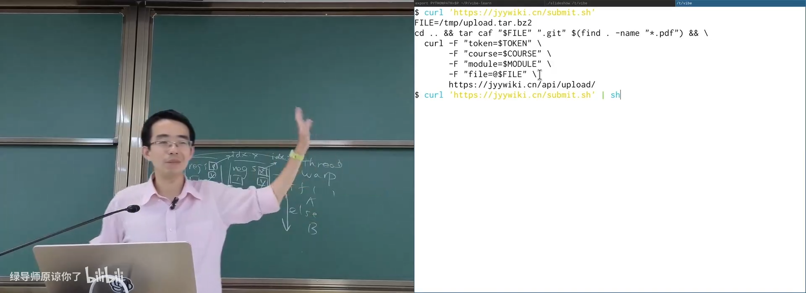
📷 通过 HTTP API 和命令行与模型对话
回到原视频 (00:08:30)
2.2 用 strace 打开网络请求
(参考时间: 00:10)
从操作系统视角看，网络请求仍然是文件描述符和系统调用：
socket()
connect()
sendto()/write()
recvfrom()/read()
close()
strace 可以展示：
- DNS 查询；
- TCP 连接建立；
- 向远端地址和端口发送数据；
- 从 socket 读取响应；
- 流式响应如何逐段到达。
flowchart LR
A["程序"] --> B["socket()"]
B --> C["connect()"]
C --> D["write HTTP Request"]
D --> E["read HTTP Response"]
E --> F["处理 JSON / Stream"]
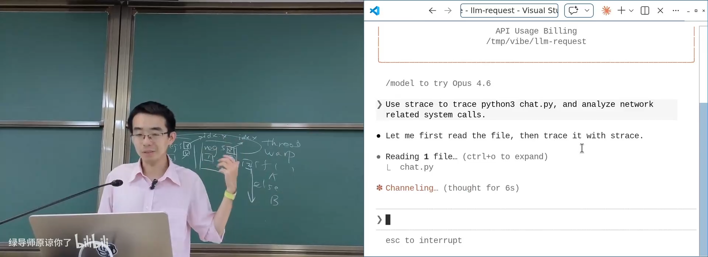
📷 strace 展示 HTTP 请求背后的系统调用链
回到原视频 (00:10:30)
2.3 DNS 已经开始负载均衡
(参考时间: 00:12)
第一步是把域名解析为 IP：
dig api.deepseek.com +short
大型服务通常返回多个 IP，并且不同地区可能得到不同结果。这本身就是一种负载均衡和流量调度。
flowchart TD
A["api.deepseek.com"] --> B["DNS Resolver"]
B --> C1["IP 1 / 地区 A"]
B --> C2["IP 2 / 地区 B"]
B --> C3["CDN / 网关节点"]
C1 --> D["Client"]
C2 --> D
C3 --> D
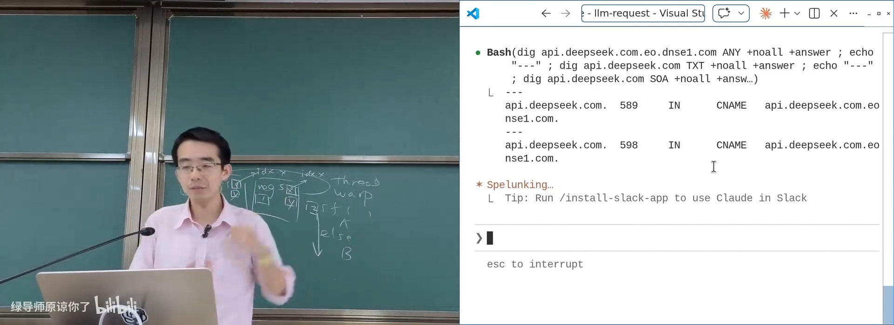
📷 DNS 返回多个地址并为请求做初步调度
回到原视频 (00:13:30)
2.4 TTL 与逐跳转发
(参考时间: 00:14)
traceroute 通过逐次增加 TTL，让路径上的路由器返回 ICMP Time Exceeded：
TTL = 1 → 第一跳超时
TTL = 2 → 第二跳超时
TTL = 3 → 第三跳超时
典型延迟：
- 局域网：小于 1 ms；
- 同城：几毫秒；
- 跨国：可能约 200 ms。
flowchart LR
A["本机"] --> B["默认网关"]
B --> C["ISP"]
C --> D["骨干网络"]
D --> E["数据中心入口"]
E --> F["业务服务器"]
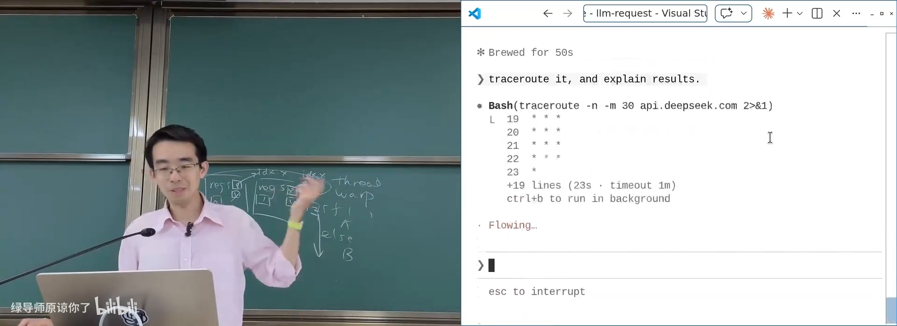
📷 TTL 与 traceroute 展示数据包逐跳到达远端
回到原视频 (00:15:30)
2.5 到达的往往先是负载均衡器
(参考时间: 00:16)
请求最终到达的机器未必是业务服务器，而可能先抵达负载均衡器或 API 网关。
响应头可能显示：
HTTP/2 200
server: openresty
content-type: text/event-stream
cache-control: no-cache
connection: keep-alive
负载均衡器本身只做转发和路由，真正昂贵的模型推理留给后面的 worker。
flowchart TD
A["公网请求"] --> B["Load Balancer"]
B --> C1["Worker 1"]
B --> C2["Worker 2"]
B --> C3["Worker N"]
C1 --> D["业务处理"]
C2 --> D
C3 --> D
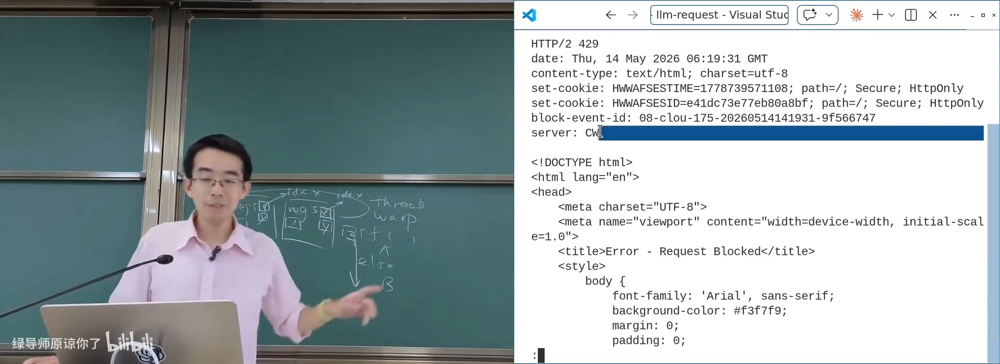
📷 负载均衡器把请求转发到实际业务 worker
回到原视频 (00:17:00)
3. 进入数据中心
3.1 上半场：应用后端
(参考时间: 00:20)
数据中心可以定义为：
A network of computing and storage resources that enable the delivery of shared applications and data.
第一波浪潮从 1990 年代持续至今：
- 静态网页；
- Web 2.0；
- 移动互联网；
- 云端账号与个性化数据。
云端保存了用户完整的“personality”，也意味着服务商掌握大量数据。法律限制了数据的使用方式，但技术上这些数据客观存在。
flowchart LR
A["静态 Web"] --> B["Web 2.0"]
B --> C["移动互联网"]
C --> D["云账号 / 云存储"]
D --> E["共享应用与数据"]
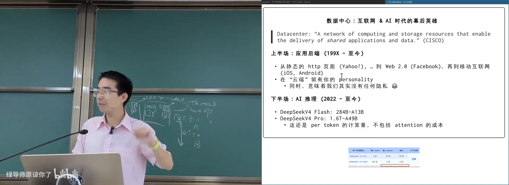
📷 数据中心上半场承载互联网应用后端
回到原视频 (00:21:30)
3.2 下半场：AI 推理
(参考时间: 00:22)
第二波浪潮从生成式 AI 开始。课程举例：
- DeepSeekV4 Flash：
284B-A13B； - DeepSeekV4 Pro：
1.6T-A49B； - 上述数字还只描述每个 Token 的部分计算，不包含 Attention 的全部成本。
模型规模和推理需求把数据中心从“互联网后端”推进到“AI 基础设施”。
flowchart TD
A["数据中心上半场"] --> B["CRUD / 社交 / 支付 / 视频"]
A --> C["数据中心下半场"]
C --> D["大模型训练"]
C --> E["大模型推理"]
E --> F["GPU / 高速网络 / KV Cache"]
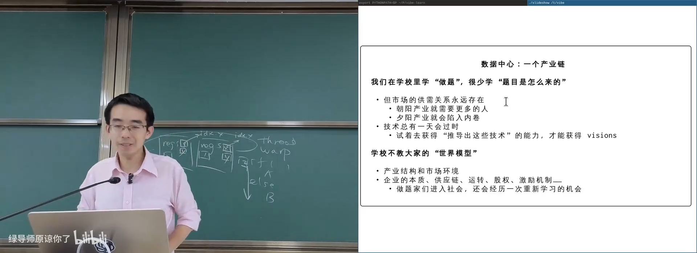
📷 AI 推理成为数据中心下半场的核心负载
回到原视频 (00:23:30)
3.3 学校之外的世界模型
(参考时间: 00:24)
技术本身会过时，但推导技术、理解需求来源的能力不会轻易过时。数据中心背后是完整产业链：
- 土地；
- 电力；
- 水资源与散热；
- 网络；
- 硬件供应链；
- 软件生态；
- 运维、销售与资本市场。
课程提醒：不要只会做题，还要理解题目从哪里来、产业结构如何运转、未来需求会如何变化。
flowchart LR
A["用户需求"] --> B["应用"]
B --> C["数据中心"]
C --> D["土地 / 电力 / 水"]
C --> E["服务器 / GPU"]
C --> F["网络 / 存储"]
C --> G["软件与运维"]
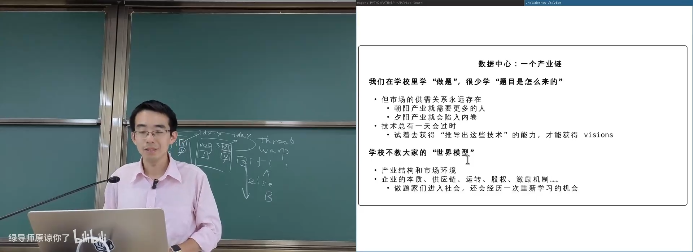
📷 数据中心是由技术和产业链共同驱动的系统
回到原视频 (00:25:30)
4. 数据中心中的并发编程
4.1 CRUD 仍然是主体
(参考时间: 00:27)
实时请求大多属于增删改查：
- 用户鉴权；
- 订单事务；
- 消息与聊天记录；
- 弹幕；
- 点赞与收藏；
- API 计费；
- 内容缓存。
大模型请求之前，也要先完成 API Key 校验、用户状态查询、限流和计费。
flowchart TD
A["HTTP Request"] --> B["API Key 鉴权"]
B --> C["查询用户 / 限流"]
C --> D["LLM Inference"]
D --> E["审计"]
E --> F["计费 / Dashboard"]
F --> G["Streaming Response"]
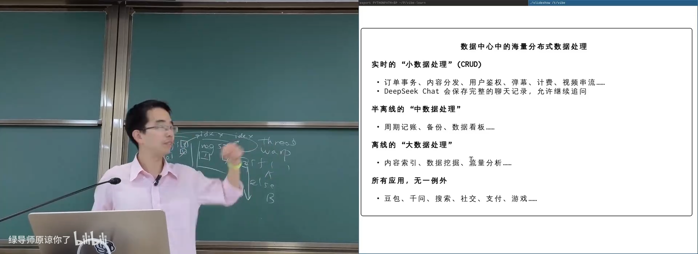
📷 LLM API 请求前后包含大量 CRUD 与业务逻辑
回到原视频 (00:27:30)
4.2 小数据、中数据和大数据
(参考时间: 00:29)
数据中心处理的任务可以分成层次：
实时小数据
- 订单；
- 鉴权；
- 弹幕；
- 计费。
半离线中数据
- 周期记账；
- 日账单、月账单；
- 备份；
- 数据看板。
离线大数据
- 内容索引；
- 数据挖掘；
- 流量分析；
- 神经网络训练。
flowchart LR
A["实时 CRUD"] --> B["半离线批处理"]
B --> C["离线大数据"]
C --> D["模型训练 / 索引"]
D --> A
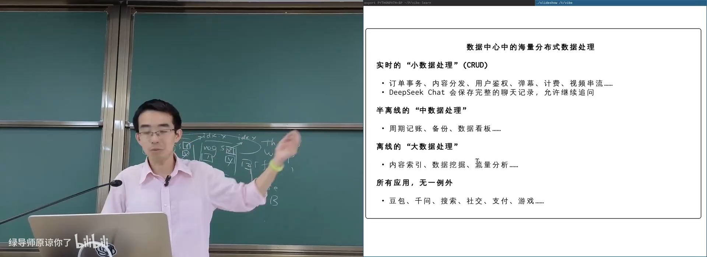
📷 实时、半离线与离线数据处理共同构成数据中心
回到原视频 (00:29:30)
4.3 C10K 与线程模型
(参考时间: 00:30)
1999 年，Dan Kegel 提出 C10K 问题：能否让 Web 服务器同时处理 10,000 个客户端？
如果每个请求都创建一个线程：
while (true) {
Request *rq = get_request();
pthread_create(&tid, NULL, handle_request, rq);
}
请求规模和线程资源会迅速失控。
flowchart TD
A["10K 并发连接"] --> B["每连接一个线程"]
B --> C["线程栈与内核对象"]
B --> D["上下文切换"]
C --> E["资源耗尽"]
D --> E
E --> F["无法支撑 C10K"]
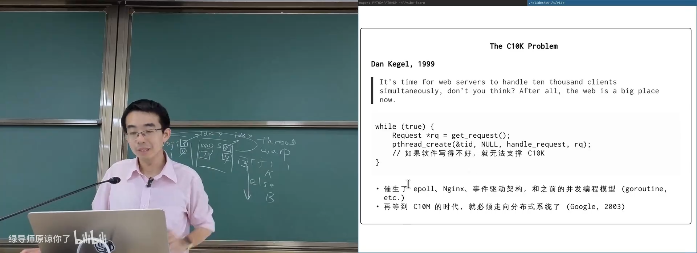
📷 线程-per-request 模型无法直接支撑 C10K
回到原视频 (00:31:30)
4.4 C10K 催生的事件驱动技术
(参考时间: 00:32)
C10K 推动了一系列技术出现：
select/poll；epoll；- Nginx 等事件驱动服务器；
- goroutine 与异步运行时。
从 C10K 到 C10M，单机并发模型不再足够，系统走向分布式架构。
flowchart LR
A["C10K"] --> B["I/O Multiplexing"]
B --> C["epoll / Nginx"]
C --> D["事件驱动架构"]
D --> E["Coroutine / Goroutine"]
E --> F["C10M"]
F --> G["分布式系统"]
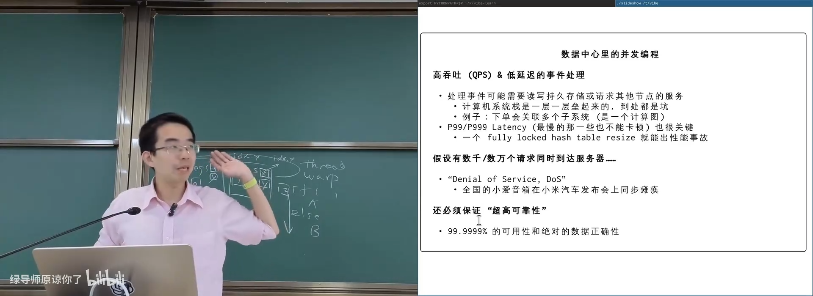
📷 C10K 推动 epoll、事件驱动和异步编程模型
回到原视频 (00:33:30)
4.5 P99 延迟与服务体验
(参考时间: 00:34)
数据中心关注的不只是平均延迟，还包括 P99、P999 等尾部延迟。一个全表暂停的并发哈希表 resize 就可能造成事故：
- 分配几十 MB 新表；
- 迁移全部 bucket；
- 暂停期间所有请求等待；
- 延迟从微秒上升到几十毫秒甚至上百毫秒。
flowchart TD
A["Hash Table Resize"] --> B["几十 MB 内存分配"]
B --> C["全表迁移"]
C --> D["其他请求等待"]
D --> E["P99 延迟上升"]
E --> F["用户体验下降"]
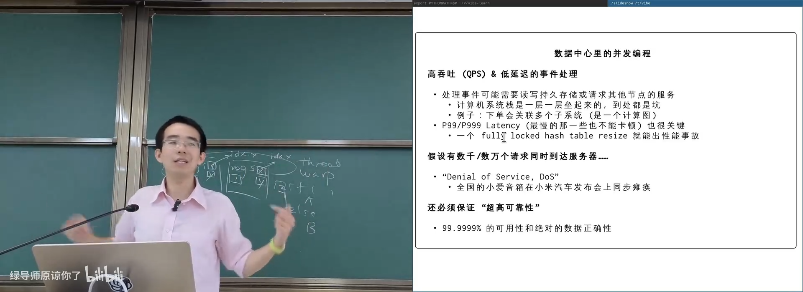
📷 一次全表 resize 就可能破坏尾部延迟
回到原视频 (00:35:00)
4.6 意外的拒绝服务
(参考时间: 00:36)
海量请求同时到来，可能形成类似 DoS 的效果。课程提到小米发布会场景：
发布会上的“小爱同学”唤醒词，同时触发了全国大量设备，导致服务短时间瘫痪。
flowchart TD
A["发布会说出唤醒词"] --> B["全国设备同时响应"]
B --> C["海量请求涌入"]
C --> D["后端容量不足"]
D --> E["服务不可用"]
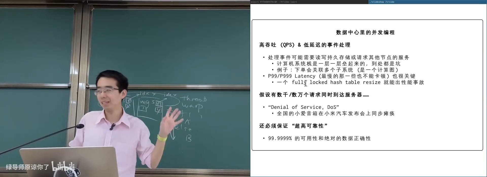
📷 同步唤醒大量设备会形成类似 DoS 的请求风暴
回到原视频 (00:36:30)
5. CAP 定理与分布式系统难题
5.1 三个目标不能同时满足
(参考时间: 00:37)
CAP Theorem：
- Consistency：所有节点看到一致的顺序与结果；
- Availability：每个请求都能及时得到响应；
- Partition tolerance：网络分区或机器失联时系统仍能继续运行。
三者不可兼得。单机系统更容易获得一致性和可用性，但无法扩展为全球分布式系统。
flowchart TD
A["分布式系统"] --> B["Consistency"]
A --> C["Availability"]
A --> D["Partition Tolerance"]
B --> E["无法同时满足三者"]
C --> E
D --> E
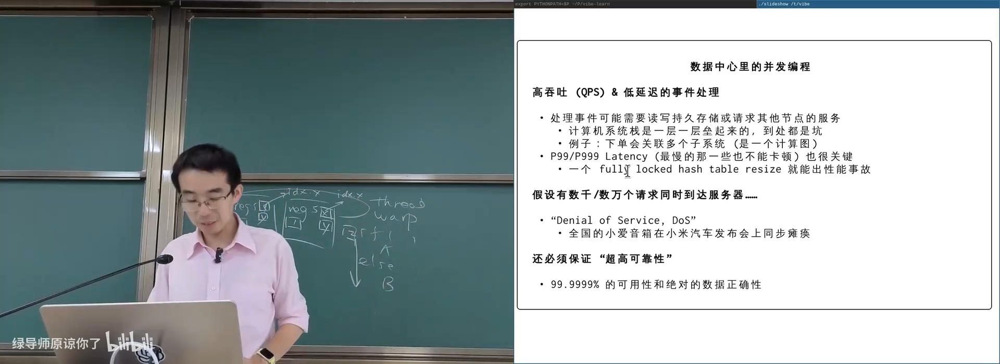
📷 CAP 定理描述分布式系统中的不可能三角
回到原视频 (00:37:30)
5.2 拉黑好友与朋友圈
(参考时间: 00:38)
讲师用一个生活例子解释 CAP：
- 用户先拉黑某人；
- 随后发布朋友圈；
- 用户以为两个请求有先后顺序；
- 但两个请求可能落在不同数据中心；
- 拉黑状态尚未同步时，另一数据中心仍可能显示朋友圈。
sequenceDiagram
participant U as 用户
participant A as 南京数据中心
participant B as 杭州数据中心
U->>A: 拉黑请求
A-->>U: 立即成功
A--xB: 后台同步（有延迟）
U->>B: 发布朋友圈
B-->>U: 发布成功
B->>B: 尚未收到拉黑状态
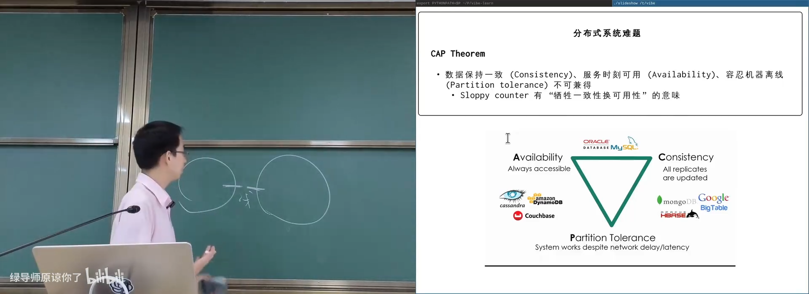
📷 跨数据中心同步延迟会破坏用户感知的顺序
回到原视频 (00:39:00)
5.3 API Key 也撞上 CAP
(参考时间: 00:43)
API Key 需要：
- 鉴权；
- 计费；
- 审计；
- 限流；
- 随时禁用。
同一个 Key 可以被多个机器使用，因此 Key 的状态是跨机器的共享数据。禁用操作和并发请求之间同样面临 CAP 问题。
flowchart TD
A["API Key"] --> B["鉴权"]
A --> C["计费"]
A --> D["审计"]
A --> E["禁用 / 恢复"]
B --> F["多个推理节点共享状态"]
C --> F
D --> F
E --> F
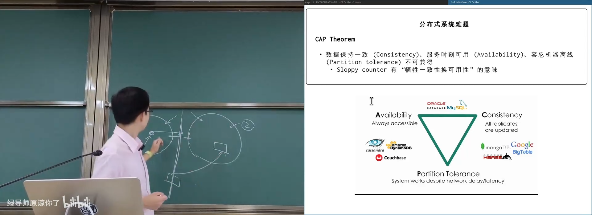
📷 API Key 的禁用与并发请求形成分布式一致性难题
回到原视频 (00:43:30)
5.4 机器随时会消失
(参考时间: 00:45)
分布式程序把单机并发难度进一步放大：
- 共享内存操作从纳秒级变成网络毫秒级；
- 网络可能延迟、丢包或分区；
- 机器可能随时断电或离线；
- 程序执行到一半时进程可能消失。
flowchart TD
A["单机多线程"] --> B["数据竞争 / 死锁"]
A --> C["共享内存"]
D["分布式系统"] --> E["网络延迟"]
D --> F["网络分区"]
D --> G["机器崩溃"]
D --> H["请求可能重试"]
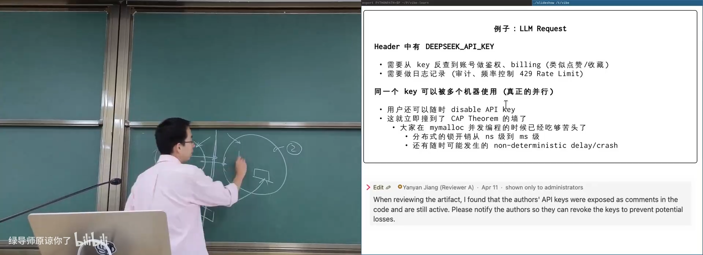
📷 分布式系统的故障模型远复杂于单机并发
回到原视频 (00:45:30)
6. 用新抽象重新设计系统
6.1 从“把数据带到计算”到“把计算带到数据”
(参考时间: 00:47)
UNIX 以程序为中心，通过管道组合：
cat input.txt | grep pattern | sort | uniq -c
分布式系统则要面对程序随时消失的问题，因此转向以数据为中心：
- 数据被分片；
- 计算被调度到数据附近；
- 失败时重新执行计算；
- 机器和分片对程序员透明。
flowchart LR
A["UNIX: 数据带到程序"] --> B["程序为核心"]
C["分布式: 计算带到数据"] --> D["数据 / 分片为核心"]
D --> E["失败后重算"]
D --> F["位置透明"]
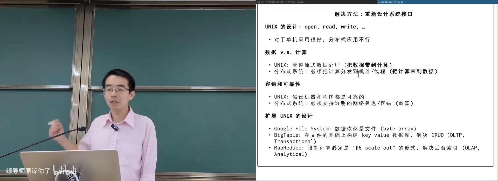
📷 分布式系统从程序中心转向数据中心
回到原视频 (00:47:30)
6.2 Google File System
(参考时间: 00:48)
第一层抽象仍然是文件：
File = Byte Array
GFS 把大文件切分并复制到多台机器上，但向应用隐藏机器、分片和副本的存在。
flowchart TD
A["逻辑文件"] --> B1["Chunk 1"]
A --> B2["Chunk 2"]
A --> B3["Chunk 3"]
B1 --> C1["Machine A"]
B1 --> C2["Machine B"]
B2 --> C3["Machine C"]
B3 --> C4["Machine D"]
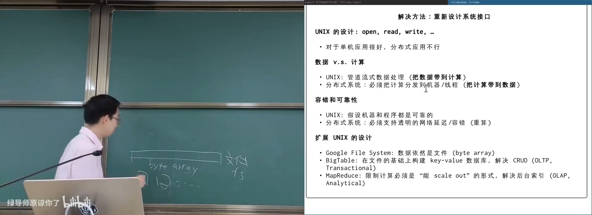
📷 GFS 用分片和副本隐藏分布式存储复杂性
回到原视频 (00:49:30)
6.3 BigTable 与 MapReduce
(参考时间: 00:50)
在文件系统之上，Google 构建了更高层抽象：
- BigTable：分布式 Key-Value 数据库，解决 OLTP/CRUD；
- MapReduce：限制计算形式，使任务可以自动 Scale Out，解决离线索引和 OLAP。
flowchart TD
A["GFS: 分布式文件"] --> B["BigTable: Key-Value DB"]
A --> C["MapReduce: 批量计算"]
B --> D["实时 CRUD"]
C --> E["离线索引 / 分析"]
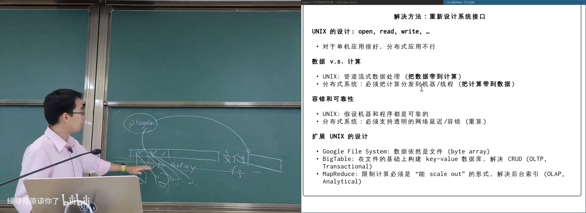
📷 BigTable 与 MapReduce 把分布式复杂性封装成通用抽象
回到原视频 (00:50:30)
7. Serverless：描述计算图，把基础设施交给平台
7.1 Function as a Service
(参考时间: 00:52)
Serverless 的核心思想：
编写函数来描述事件驱动的计算图，基础设施、扩容和容错交给云平台。
一个典型事件处理器：
const dynamo = new AWS.DynamoDB.DocumentClient();
exports.handler = async (event) => {
const apiKey = event.headers['Authorization']
?.replace('Bearer ', '');
const user = await dynamo.send(new GetCommand({
TableName: 'APIKeys',
Key: { apiKey }
})).Item;
if (!user || user.disabled) {
return { statusCode: 401, body: 'Unauthorized' };
}
return {
statusCode: 200,
body: await do_llm_inference(event.body)
};
};
flowchart TD
A["HTTP Event"] --> B["Function Handler"]
B --> C["读取 API Key"]
C --> D["查询 Distributed DB"]
D --> E{"合法且启用？"}
E -- "否" --> F["401"]
E -- "是" --> G["LLM Inference"]
G --> H["200 / Stream"]
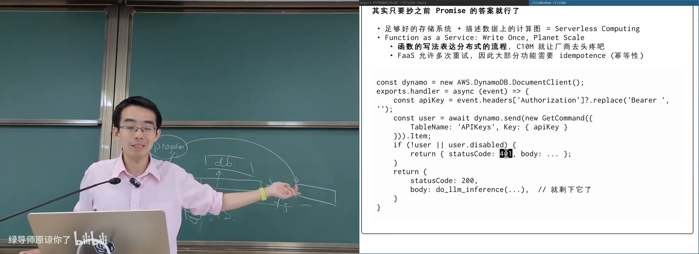
📷 Serverless 用事件函数表达数据中心业务计算图
回到原视频 (00:54:30)
7.2 幂等性
(参考时间: 00:56)
Serverless 函数可能执行到一半崩溃，平台随后重试。如果简单执行：
load sum
sum++
store sum
同一次请求可能被计费两次。
更安全的方式是在函数入口生成唯一事件 ID，并把操作表达为集合插入：
id = unique_request_id()
insert(set, id)
sum = size(set)
重复执行只会插入同一个 ID，结果保持一致，这就是幂等性。
flowchart TD
A["函数开始"] --> B["生成唯一 Request ID"]
B --> C["向 Set 插入 ID"]
C --> D{"ID 已存在？"}
D -- "是" --> E["结果不变"]
D -- "否" --> F["集合大小增加 1"]
E --> G["安全重试"]
F --> G
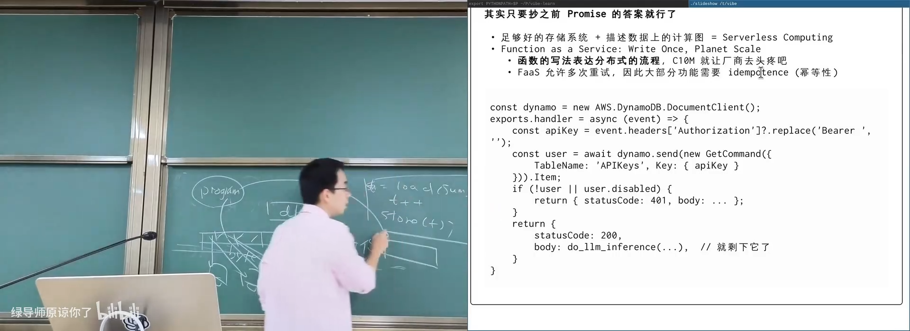
📷 唯一请求 ID 让可能重试的操作保持幂等
回到原视频 (00:56:30)
7.3 存储与计算分离
(参考时间: 00:58)
云环境中的计算节点通过高速网络连接 SSD 集群。应用看似只写一份文件，底层存储系统可能：
- 保存 2 到 3 个副本；
- 自动压缩；
- 对相同内容做去重；
- 用引用计数共享公共文件；
- 在压缩去重后降低实际存储成本。
flowchart LR
A["计算节点"] --> B["高速网络"]
B --> C["分布式 SSD / 存储集群"]
C --> D1["副本 1"]
C --> D2["副本 2"]
C --> D3["副本 3"]
C --> E["压缩 / 去重"]
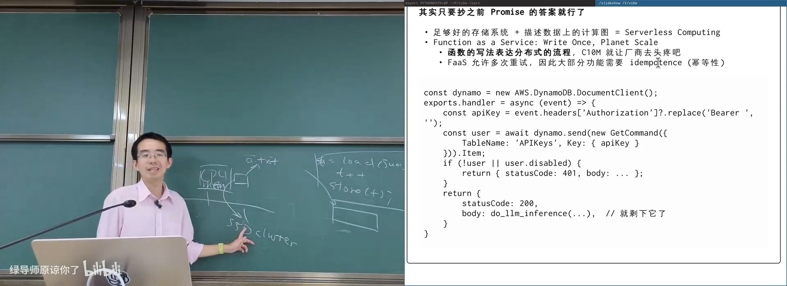
📷 云存储通过副本、压缩和去重获得可靠性
回到原视频 (00:58:30)
8. 从 Token 到 Tensor
8.1 LLM Forward Pass 是一个巨大的计算图
(参考时间: 01:00)
do_llm_inference() 做的是 next-token prediction。模型本质上是一个训练得到的超大函数：
input tokens
↓
Transformer layers
↓
logits
↓
sample next token
GPT 类模型的核心是重复执行标准矩阵计算和 Attention。gpt.c 中存在一个很短的 generator，能够展开为巨大计算图。
flowchart TD
A["Input Tokens"] --> B["Embedding"]
B --> C1["Transformer Layer 1"]
C1 --> C2["Transformer Layer 2"]
C2 --> C3["..."]
C3 --> D["Logits"]
D --> E["Sample Next Token"]
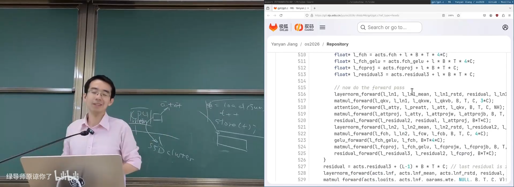
📷 LLM 前向推理展开为重复的 Transformer 层计算图
回到原视频 (01:01:30)
8.2 Matmul 与 Attention
(参考时间: 01:02)
matmul_forward 与 attention_forward 是主要热点。CUDA 版本：
void matmul_forward(float* out, ..., int B, int T, int C, int OC) {
int sqrt_block_size = 16;
dim3 gridDim(
CEIL_DIV(B * T, 8 * sqrt_block_size),
CEIL_DIV(OC, 8 * sqrt_block_size)
);
dim3 blockDim(sqrt_block_size, sqrt_block_size);
matmul_forward_kernel4<<<gridDim, blockDim>>>(
out, inp, weight, bias, C, OC
);
}
结构和 Mandelbrot 这样的逐元素任务很像，只是每个 GPU 线程处理的是矩阵元素或 Attention 内积。
flowchart TD
A["Batch B"] --> D["Matmul / Attention"]
B["Sequence T"] --> D
C["Channels C"] --> D
D --> E1["Thread (b,t,oc)"]
D --> E2["Thread (b,t+1,oc)"]
D --> E3["Thread ..."]
E1 --> F["Output Tensor"]
E2 --> F
E3 --> F
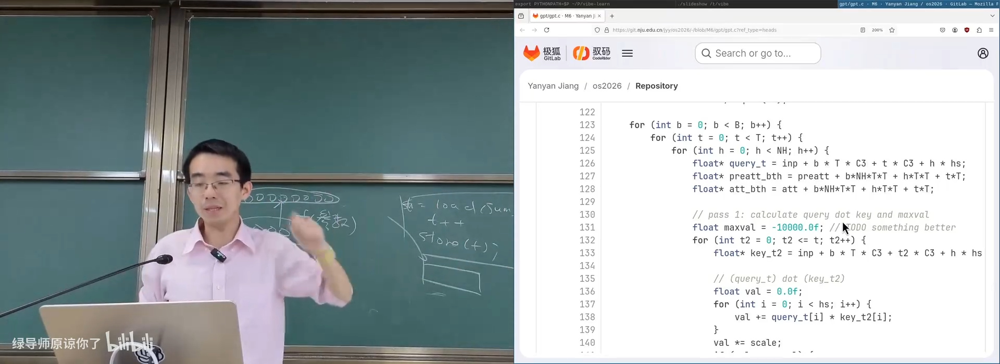
📷 Matmul 与 Attention 都是高度规则的并行循环
回到原视频 (01:03:30)
8.3 Scalar、Vector、Matrix 与 Tensor
(参考时间: 01:04)
深度学习中的数据结构逐级扩展：
- Scalar：一个数；
- Vector：一维数组；
- Matrix：二维数组；
- Tensor：更高维数组。
彩色图像天然有 RGB channel，多个 channel 又组成高维张量；Batch 进一步增加维度。
flowchart LR
A["Scalar"] --> B["Vector"]
B --> C["Matrix"]
C --> D["Tensor"]
D --> E["RGB Channels"]
E --> F["Batch / Heads / Layers"]
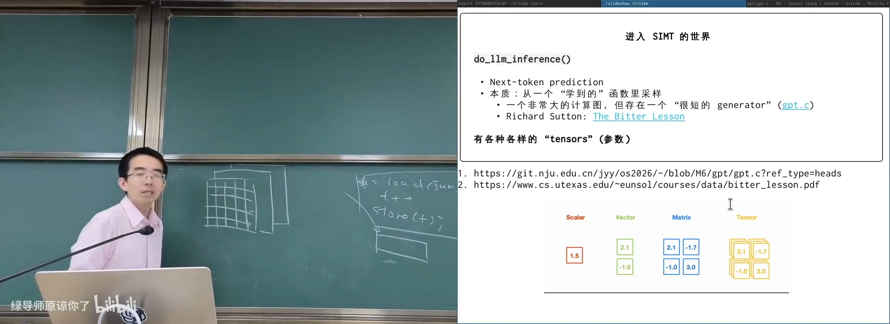
📷 Tensor 是图像、通道、批次和层结构自然产生的高维数组
回到原视频 (01:05:30)
8.4 “Attention 是一本书”的类比
(参考时间: 01:06)
讲师把每一层 Transformer 比作一本书：
- Q（Query）：我现在要找什么，也就是需要补全的句子；
- K（Key）：书的目录，我有什么内容；
- V（Value）：书的正文，具体内容是什么。
Attention 先根据 Q 和 K 找到与当前问题相关的位置，再按权重从 V 中提取信息，形成一个“短时记忆”。
flowchart LR
Q["Q: 我在找什么"] --> S["Q × Kᵀ"]
K["K: 目录索引"] --> S
S --> W["Softmax 权重"]
V["V: 正文内容"] --> A["加权求和"]
W --> A
A --> M["短时记忆"]
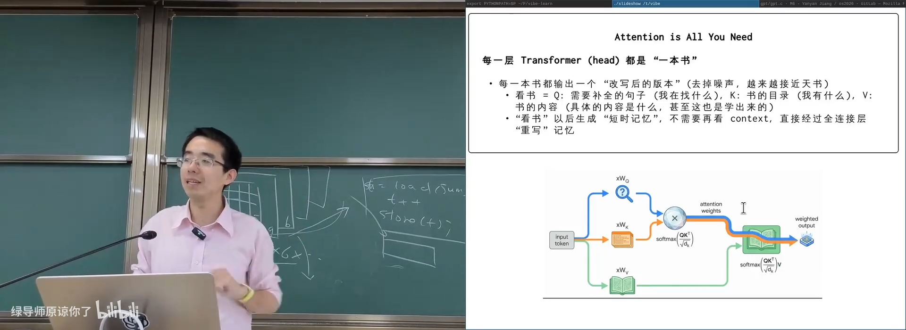
📷 Attention 通过 Q/K/V 从大量上下文中提取短时记忆
回到原视频 (01:07:00)
8.5 越接近输出，表示越抽象
(参考时间: 01:09)
每经过一层 Transformer：
- 模型读取先前层产生的表示；
- Attention 提取相关信息；
- 全连接层重写表示；
- 新的表示传给下一层。
前几层还容易与 Token 对应，越往后，表示越接近“下一个 Token 的分布”，也越来越难被人类直观解释。
flowchart TD
A["Token-level 表示"] --> B["Attention 阅读"]
B --> C["短时记忆"]
C --> D["全连接重写"]
D --> E["更高层抽象"]
E --> F["Next-token Logits"]
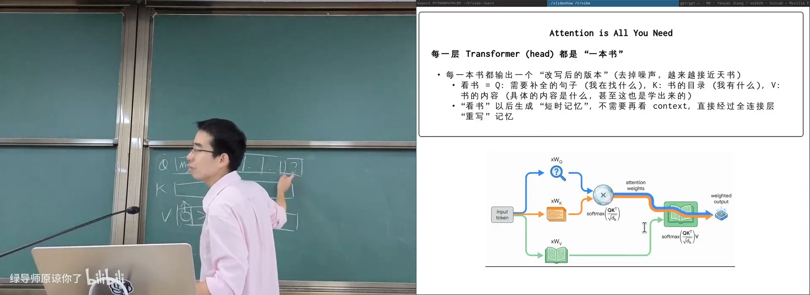
📷 Transformer 逐层重写表示并提升信息密度
回到原视频 (01:09:30)
9. 在 GPU 上压榨极致性能
9.1 Kernel 队列也是计算图
(参考时间: 01:10)
CUDA Kernel 启动后 CPU 立即返回，GPU 按提交顺序执行。多个 Kernel 形成串行计算图：
Kernel 1
↓
Kernel 2
↓
Kernel 3
每个 Kernel 内部可以拥有极高并行度，但 Kernel 之间往往要等待同步。
flowchart LR
A["CPU 提交 Kernel"] --> B["Kernel 1"]
B --> C["Kernel 2"]
C --> D["Kernel 3"]
D --> E["返回结果"]
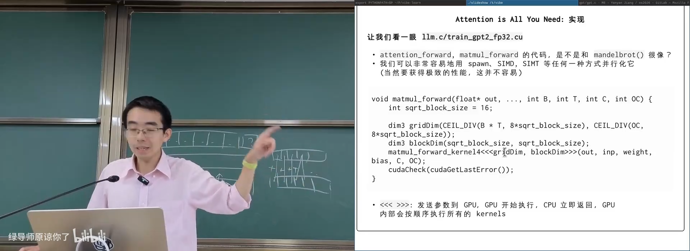
📷 CPU 向 GPU 提交多个 Kernel 形成计算图
回到原视频 (01:11:30)
9.2 Kernel Fusion 与 FlashAttention
(参考时间: 01:12)
如果每个 Kernel 末尾只剩少量线程，GPU 利用率会下降。于是可以把多个算子融合成一个计算图，减少中间读写和同步：
单独 Kernel:
QK → Softmax → PV → Output
Fusion:
在一个 Kernel 中按块完成 Attention
这类融合优化推动了 FlashAttention 等技术。
flowchart TD
A["多个小 Kernel"] --> B["频繁同步"]
B --> C["利用率下降"]
C --> D["Kernel Fusion"]
D --> E["减少中间内存"]
D --> F["减少同步"]
E --> G["FlashAttention"]
F --> G
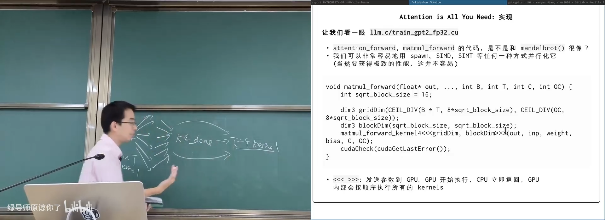
📷 FlashAttention 通过融合算子减少 Kernel 边界开销
回到原视频 (01:13:30)
9.3 Tensor Core
(参考时间: 01:14)
SIMT 已经摊薄了译码成本。进一步把 SIMD 引入 PTX，就可以让一条指令直接完成小矩阵乘法累加：
D(m × n) += A(m × k) × B(k × n)
这就是 Tensor Core 的核心运算。
flowchart LR
A["Matrix A m×k"] --> C["Tensor Core FMA"]
B["Matrix B k×n"] --> C
D["Accumulator D m×n"] --> C
C --> E["Updated D m×n"]
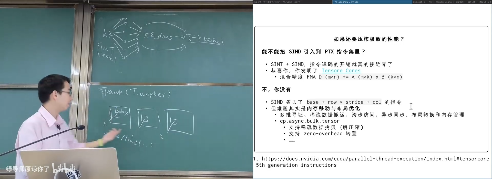
📷 Tensor Core 用一条矩阵 FMA 摊薄指令开销
回到原视频 (01:15:30)
9.4 真正困难的是内存布局
(参考时间: 01:17)
矩阵乘法需要一行乘一列，但内存是线性的。无论使用行优先还是列优先，总有一个访问维度不连续。
解决方式是把大矩阵切成 tile：
大矩阵乘法
↓
切成适合缓存的小块
↓
块内高密度计算
↓
块间继续组合
这会涉及：
- 多维寻址；
- 稀疏数据搬运；
- 跨步访问；
- 异步同步；
- 布局转换；
- 压缩与解压；
- 零开销转置。
flowchart TD
A["大矩阵"] --> B["Tiling"]
B --> C["缓存友好的小块"]
C --> D["Tensor Core FMA"]
D --> E["跨步访问优化"]
D --> F["布局转换"]
E --> G["高带宽"]
F --> G
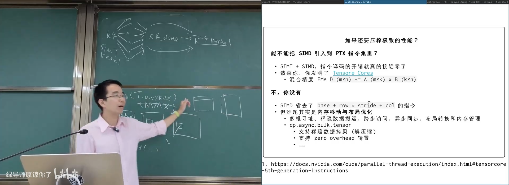
📷 矩阵分块与内存布局是 Tensor Core 性能的关键
回到原视频 (01:17:30)
9.5 cp.async.bulk.tensor
(参考时间: 01:19)
新一代 GPU 提供张量拷贝指令，支持：
- 稀疏数据拷贝；
- 解压缩；
- 零开销转置；
- 异步数据搬运。
这些能力让数据以更适合计算的布局进入 Tensor Core。
flowchart LR
A["Global Memory"] --> B["cp.async.bulk.tensor"]
B --> C["转置 / 解压缩"]
C --> D["Shared Memory"]
D --> E["Tensor Core"]
E --> F["结果写回"]
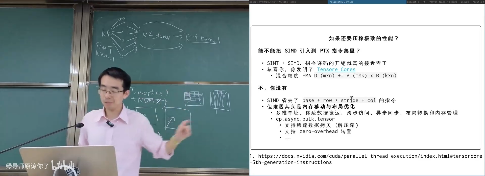
📷 异步张量拷贝在搬运过程中完成布局转换
回到原视频 (01:19:30)
10. AI 软件栈与 UNIX 历史的相似性
(参考时间: 01:20)
AI 生态从底层到应用形成完整栈：
硬件与编程模型
- GPU；
- CUDA / PTX；
- cuBLAS、DeepGEMM、NCCL。
编译器与框架
- FlashAttention；
- Triton；
- PyTorch、TensorFlow；
- 训练和推理框架。
模型与应用
- HuggingFace；
- Ollama、OpenWebUI；
- Agent 与开发工具。
flowchart TD
A["GPU / Accelerator"] --> B["CUDA / PTX"]
B --> C["cuBLAS / DeepGEMM / NCCL"]
C --> D["PyTorch / TensorFlow"]
D --> E["Training / Inference Framework"]
E --> F["Model Distribution"]
F --> G["User Applications"]
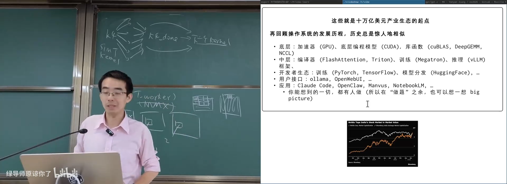
📷 AI 软件栈从 CUDA 到上层应用形成完整生态
回到原视频 (01:21:30)
11. 生成一个 Token：Prefill 与 Decode
11.1 小模型与大模型的差别
(参考时间: 01:24)
如果模型是 GPT2-XL 1.5B、上下文 1K，推理接近一次普通业务请求。
但 1.6T 参数、百万 Token 上下文则完全不同：
- 单张 GPU 放不下全部参数；
- Attention 计算量随上下文长度快速增长；
- 需要 Tensor Parallel、Pipeline Parallel、Expert Parallel；
- 需要 KV Cache 和分布式通信。
flowchart TD
A["模型规模"] --> B{"单卡可容纳？"}
B -- "是" --> C["单节点推理"]
B -- "否" --> D["模型并行"]
D --> E["Tensor Parallel"]
D --> F["Pipeline Parallel"]
D --> G["Expert Parallel"]
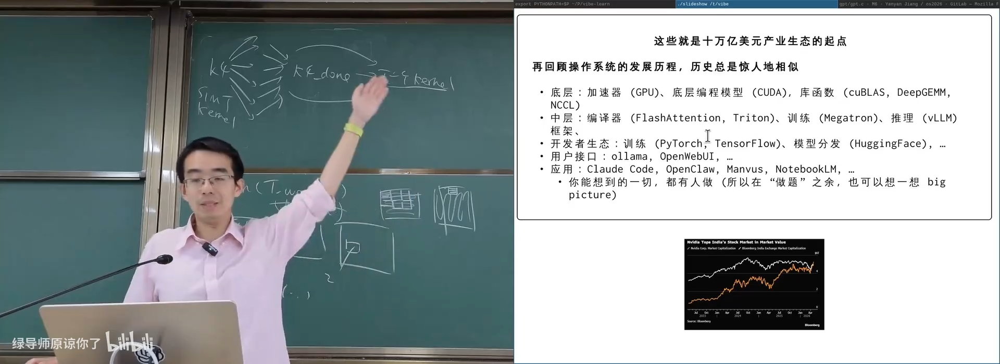
📷 大模型推理必须把参数和计算分布到多张 GPU
回到原视频 (01:24:30)
11.2 Prefill
(参考时间: 01:25)
Prefill 阶段处理输入上下文：
- 计算每层 Attention 所需的 K 和 V；
- 保存到 KV Cache；
- 形成后续生成可复用的中间状态。
flowchart TD
A["输入上下文"] --> B["逐层计算"]
B --> C["生成 K"]
B --> D["生成 V"]
C --> E["KV Cache"]
D --> E
11.3 Decode
(参考时间: 01:26)
Decode 阶段生成输出 Token：
- 读取完整 KV Cache；
- 用当前 Q 计算 Attention；
- 形成短时记忆；
- 生成下一个 Token；
- 更新 KV Cache；
- 重复直到结束。
flowchart TD
A["当前 Q"] --> B["读取 KV Cache"]
B --> C["Attention"]
C --> D["短时记忆"]
D --> E["Next Token"]
E --> F["更新 KV Cache"]
F --> B
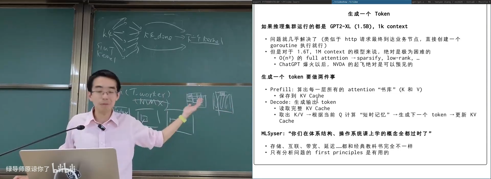
📷 Decode 逐 Token 复用 KV Cache 并重复生成
回到原视频 (01:26:30)
11.4 PD 分离
(参考时间: 01:27)
Prefill 和 Decode 的资源特征不同，现代推理服务常采用 PD 分离：
- Prefill 阶段计算密集、并行度高；
- Decode 阶段频繁读取 KV Cache、对带宽和延迟敏感；
- 两类任务放在不同资源池，可以提高整体利用率。
flowchart LR
A["请求"] --> B["Prefill Cluster"]
B --> C["KV Cache / Transfer"]
C --> D["Decode Cluster"]
D --> E1["Token 1"]
D --> E2["Token 2"]
D --> E3["Token N"]
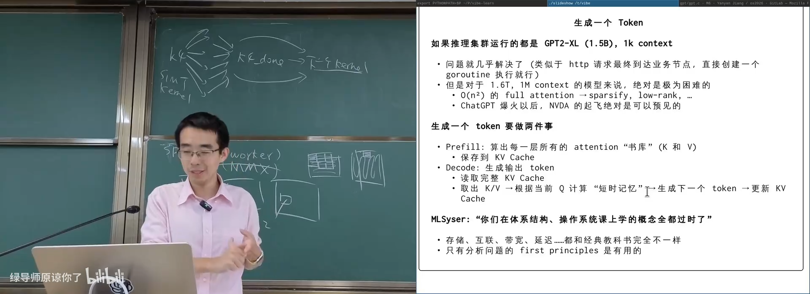
📷 PD 分离把 Prefill 与 Decode 放进不同资源池
回到原视频 (01:27:30)
12. 旅途终点：Token 返回用户
(参考时间: 01:28)
生成的 Token 最终返回后，后端还要完成：
- 审计；
- 计费；
- 更新 Dashboard；
- 构造
text/event-stream响应； - 按 JSONL chunk 逐步发送。
典型响应：
HTTP/2 200
content-type: text/event-stream; charset=utf-8
data: {"id":"...","object":"chat.completion.chunk",
"model":"deepseek-v4-flash",
"choices":[{"delta":{"role":"assistant"}}]}
flowchart TD
A["Next Token"] --> B["审计"]
B --> C["计费"]
C --> D["更新 Dashboard"]
D --> E["构造 Streaming Chunk"]
E --> F["返回客户端"]
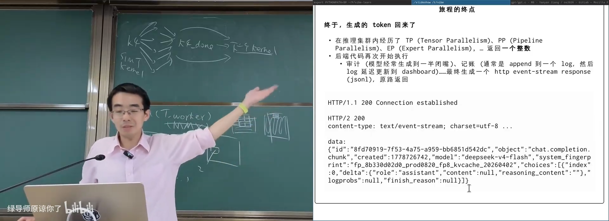
📷 Token 返回后仍有审计、计费和流式响应处理
回到原视频 (01:28:30)
13. 总结：历史总在重复，问题从未消失
这一讲用“一个 Token 的旅程”串起了整门并发与系统课程：
- 从 HTTP 和环境变量开始；
- DNS、路由和负载均衡把请求送达数据中心；
- CRUD、缓存、鉴权和计费构成业务层；
- C10K/C10M 推动事件驱动和分布式架构；
- CAP 和机器故障迫使系统重新设计抽象；
- GFS、BigTable、MapReduce、Serverless 逐层封装复杂性；
- 模型推理最终落入 Tensor、Attention 和 GPU Kernel；
- Prefill/Decode、KV Cache、Tensor Core 和内存布局决定推理性能。
flowchart LR
A["HTTP Request"] --> B["Network"]
B --> C["Distributed CRUD"]
C --> D["Serverless / Data"]
D --> E["Transformer"]
E --> F["GPU Kernel"]
F --> G["Tensor Core"]
G --> H["Next Token"]
H --> I["Stream Response"]
课程最后指出，技术会不断过时，但分析系统的方法不会：
从 first principles 出发，理解每一层在做什么，才能在未知的新系统中找到自己的位置。
附：官方参考与延伸阅读
官方课程资料：
版权与署名：本讲课程材料由蒋炎岩（jyy）编写。课程讲义与幻灯片采用 Creative Commons BY-NC 4.0 许可；本电子书保留课程出处、作者署名与许可说明。